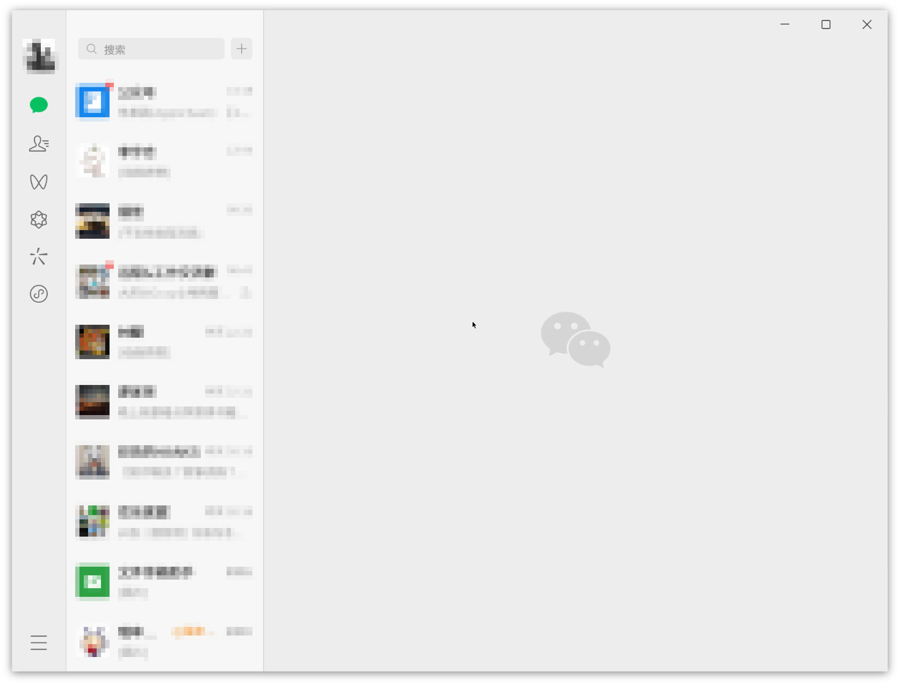

🚧 Linux-Wechat 体验导向的 Flatpak 探索
前言
我当前使用的大部分软件都有被 Deb（Chromium、VS Code 等） Appimage （Motrix、Qv2ray等）覆盖到，其他一部分使用 WebApp （Neat Reader、Google Translate等）代替，实在无解则使用 win7 虚拟机（微信、迅雷等）。
最近听闻微信发布了 linux 版本，但实际并无较为正式的公告。仅在一些视频网站偶尔刷到 linux 版本微信的演示，才让人对此有了一定的可信度。
在微信更新日志中并未提到 linux 版本的发布动作，主页亦无相关下载入口。较为正式的消息来自：
IT之家 3 月 13 日消息，统信软件和麒麟软件宣布，微信（Universal）UOS 版功能全面革新，体验全新升级，新版本现已上架统信应用商店和麒麟软件商店，UOS 用户可直接在统信应用商店搜索“微信（Universal）”下载体验，银河麒麟用户可在银河麒麟桌面操作系统 V10 安装使用。
据IT之家此前报道，微信将迎来 Linux 原生版重构，支持 X86、ARM、龙芯 LoongArch64 架构，系统方面支持麒麟和统信 UOS。
其他的消息来源有：
从星火软件商店 和 Archlinux wiki 我分别下载了三个版本：微信（Universal）、Freechat 版本微信和 wechat-universal-bwrap 1.0.0.238-13。各有各的问题导致无法使用，不展开。这也是可以预见的，从消息来源中可知，此 linux 版本的微信是面向 UOS 和银河麒麟，目标非我当前所使用的发行版本。当然我估计是可以通过花费时间解决这些使用问题，但私以为性价比过低，因此搁置，抛之脑后。
缘法妙不可言（估计是推荐机制），后面了解到 web1n 打包了 fatpak 版本的 wechat-universal-flatpak，基于 flatpak 的沙盒特性，我认为可以顺利使用的可能性很大。安装后体验确实如此！基本使用无问题：

直接可见的 bug 是 cursor 的样式异常：
cursor 的类型（Adwaita）与全局（Bibata-Modern-Classic）的不一致；
尺寸过小，若正常使用的尺寸定位为 10，那么目前的估计是 1；
其他功能性的 bug 按下不讨论。对于这个样式性的 bug，回顾过往使用与安装的 Flatpak 软件，似乎大多是有类似的问题。这是 Flatpak 自身的问题？
以此引出本文讨论与探索的主题：从解决实际问题——wechat-universal-flatpak 的 cursor 样式异常——探索 Flatpak。
背景
设备
System:
Kernel: 5.15.0-76-generic x86_64 bits: 64 compiler: gcc v: 11.3.0 Desktop: Cinnamon 5.8.4
tk: GTK 3.24.33 wm: muffin dm: LightDM Distro: Linux Mint 21.2 Victoria base: Ubuntu 22.04 jammyMachine:
Type: Laptop System: LENOVO product: 82NJ v: Yoga 14sACH 2021 D serial: <superuser required>
Chassis: type: 10 v: Yoga 14sACH 2021 D serial: <superuser required>
Mobo: LENOVO model: LNVNB161216 v: SDK0T76479 WIN serial: <superuser required> UEFI: LENOVO
v: HECN23WW date: 10/15/2021CPU:
Info: 8-core model: AMD Ryzen 7 5800HS Creator Edition bits: 64 type: MT MCP arch: Zen 3 rev: 0
cache: L1: 512 KiB L2: 4 MiB L3: 16 MiB
Speed (MHz): avg: 2705 high: 3887 min/max: 1200/3200 boost: enabled cores: 1: 2938 2: 578
3: 2473 4: 2268 5: 2233 6: 3057 7: 2560 8: 2473 9: 2524 10: 2734 11: 3887 12: 3467 13: 2903
14: 2943 15: 2931 16: 3311 bogomips: 102206
Flags: avx avx2 ht lm nx pae sse sse2 sse3 sse4_1 sse4_2 sse4a ssse3 svm
Flatpak 版本
1 | isaac @ Mint-Yoga in ~ [11:26:56] |
Flatpak Application
保持安装 wechat-universal-flatpak 后状态，不新增 Flatpak 软件。
1 | isaac @ Mint-Yoga in ~ [13:07:51] |
实践
wechat-universal-flatpak 的 cursor 样式异常，这个问题据目前可知的信息，可以推断是与 Flatpak 相关性更大而非微信本身。因此，根据 Flatpak 与 cursor 样式做一定的资料搜集，以及解决方案的搜索。下面是经过滤后较有可行性的方案：
实践一
从 Reddit | Flatpak App Changing Cursor Theme And Size (Is This Normal Behavior?) 的一个评论中得到一个解决方案，在此评论的回复中不少人表示有效：
@Relevant_Ferret8075
Try these commands:
2
flatpak --user override --filesystem=/usr/share/icons/:ro
根据评论中给出的 2 条命令在终端执行，结果是顺利执行无报错，但遗憾的是并未解决。
PS：为一定程度的严谨性，在执行命令后会重启微信，后面的每次实践可能的解决方案亦会重复此步骤。
实践二
从 Github issue | flatpak/flatpak | Different cursor theme in flatpak apps #709 | the solution too on Linux Mint 得到相对更全面的方案。且评论中的用户使用的发行版与当前实验的接近（见背景说明）。
@garfieldairlines commented on Jan 13, 2023
That was the solution too on Linux Mint, thank you I was getting crazy !As of Jan 12th, 2023, I ran the following commands (in this order) on Fedora 37 (Gnome 43) and all my Flatpak apps now see the correct cursor icons:
2
3
4
5
flatpak --user override --filesystem=/home/$USER/.icons/:ro
flatpak --user override --filesystem=/usr/share/icons/:ro
flatpak override --user --env=XCURSOR_PATH=~/.icons
flatpak override --user --filesystem=xdg-config/gtk-3.0:ro
这个方案中增加了对 xdg-config/gtk-3.0 目录访问权限的用户级别的覆盖，和设置 XCURSOR_PATH 环境变量。
实践新增内容部分，结果是顺利执行无报错，但遗憾的是并未解决。
实践三
Archlinux Wiki | Flatpak 有着关于 Flatpak 较为全面的信息，其中 Archlinux Wiki | Flatpak | Troubleshooting | Applications do not use the correct cursor theme 更是直指 Flatpak 的 cursor 问题，一定程度上也印证了前面关于 cursor 异常的推测。
5.6 Applications do not use the correct cursor theme
Applications do not use the correct cursor theme
There is no single standard to set the cursor properly. Some programs only need read access to the cursors directory, others also rely on other mechanisms. For GTK applications, ensure that xdg-desktop-portal-gtk is installed.Otherwise, the following overrides should work for most common desktop applications.
2
3
4
$ flatpak -u override --filesystem=/home/$USER/.icons/:ro
$ flatpak -u override --filesystem=xdg-config/gtk-3.0:ro
$ flatpak -u override --env=XCURSOR_PATH=~/.iconsIn some cases you may also need to override the environment variables
XCURSOR_THEMEandXCURSOR_SIZE:
2
$ flatpak -u override --env=XCURSOR_SIZE=24See this discussion for additional details.
相比实践一、二，增加的是 XCURSOR_THEME 和 XCURSOR_SIZE 环境变量的设置。
实践新增内容部分，结果是顺利执行无报错，但遗憾的是并未解决。
实践四
以上三个方案是过滤后，目前解决问题可能性最大的，至少当前未发现更加有用的信息。根据以上的资料，做出合理的推论，应大概率可以解决（毕竟已经常见到被明确收录进 Wiki 的问题），但经实践后依然未达预期。此刻当做二次梳理以排除误操作。
实践三中 XCURSOR_THEME 和 XCURSOR_SIZE 根据语义推测应分别是指定 cursor 的类型和尺寸。尝试调整尺寸以判断是否因设置的尺寸太小迷惑导致无效的假象。
1 | flatpak --user override --env=XCURSOR_SIZE=48 |
调整为原来的一倍。结果是顺利执行无报错，但无变化。
再检查前面设置的目录：
/usr/share/icons/：
1 | cd /usr/share/icons/ |
/home/$USER/.icons/：
1 | cd ~/.icons |
此目录下仅 icons 一个。回顾实践二中执行的其中一条命令：
1 | cp /usr/share/icons ~/.icons -r |
icons 目录是由 /usr/share/icons 拷贝而来，说明 ～/.icons/ 原本是空的。
实践二中执行的其中另外一条命令：
1 | flatpak override --user --env=XCURSOR_PATH=~/.icons |
打印 wechat-universal-flatpak 的状态信息：
1 | flatpak info -M com.tencent.WeChat master |
确实已经成功设置 XCURSOR_PATH，根据语义推断是 cursor 的主题类型目录。结合以上信息，XCURSOR_PATH 应设置为 XCURSOR_PATH=~/.icons/icons/ 或 将 ~/.icons/icons/ 目录的内容转移到 ~/.icons/ 目录下。
此处为保持统一，选择后者。实践变动的部分，结果是顺利执行无报错，重启微信后，确实生效！
1 | isaac @ Mint-Yoga in ~/.icons [21:45:54] |
复盘
虽然在实践四中问题得到了解决，但实际导致异常的原因仍然未明了，那些是有效的、那些是无效的设置。逐步回溯。
回溯“实践三”
在实践三中，设置了两个环境变量：XCURSOR_THEME 和 XCURSOR_SIZE。因此，需对此进行撤销。从 flatpak override --help（见附录）可以得到撤销的方法：
2
3
4
5
6
7
8
Usage:
flatpak override [OPTION…] [APP] - Override settings [for application]
...
Application Options:
...
--unset-env=VAR Remove variable from environment
...
由此可得：
1 | flatpak --user override --unset-env=XCURSOR_THEME |
执行以上命令，结果是顺利执行无报错。打印状态确认已生效，见：
1 | flatpak info -M com.tencent.WeChat master |
重启微信的结果：异常出现。
为避免默认的 cursor 尺寸过小导致误判，重设 XCURSOR_SIZE 为 48。设置后，重启微信，异常依旧。
可以判断 XCURSOR_THEME 无默认值，且需要手动设置。
撤销以上，仅设置 XCURSOR_THEME=Adwaita。重启微信的结果：异常消失，cursor 大小正常。
可以判断 XCURSOR_SIZE 有默认值，无需要手动设置。
回溯“实践二”
在实践二中，覆盖了 xdg-config/gtk-3.0 目录，以及设置了 XCURSOR_PATH 环境变量。
接下来将保留回溯“实践三”的结果分别撤销二者，以判断覆盖 xdg-config/gtk-3.0 目录的必要性，以及 XCURSOR_PATH 是否有默认值且为 /home/$USER/.icons/ 或 /usr/share/icons/ 两者之一。
撤销环境变量的方法见上，撤销目录覆盖的方法参考 flatpak override --help（见附录），并无撤销的方法，但存在可选参数——--nofilesystem，根据参数的描述可知，此参数类似禁用的作用。如此亦不影响实验目的。
2
3
4
5
6
7
8
9
Usage:
flatpak override [OPTION…] [APP] - Override settings [for application]
...
Application Options:
...
--filesystem=FILESYSTEM[:ro] Expose filesystem to app (:ro for read-only)
--nofilesystem=FILESYSTEM Don't expose filesystem to app
...
撤销 XCURSOR_PATH，撤销成功（已打印状态确认，见附录-撤销“设置 XCURSOR_PATH”），重启微信的结果：无异常。
可以判断 XCURSOR_PATH 有默认值，且为 /home/$USER/.icons/ 或 /usr/share/icons/ 两者之一，XCURSOR_PATH 无需手动设置。
另外也进一步确认 --unset-env 的作用是撤销而非禁用。
撤销覆盖 xdg-config/gtk-3.0：
1 | flatpak --user override --nofilesystem=xdg-config/gtk-3.0 |
据打印的状态（详细见附录-禁用“xdg-config-x2F-gtk-3-0”目录）：
1 | filesystems=xdg-download;xdg-pictures;xdg-music;!xdg-config/gtk-3.0;/home/isaac/.icons:ro;xdg-config/fontconfig:ro;/usr/share/icons:ro; |
确为“禁用”操作，且已禁用成功。重启微信的结果：无异常。
可以判断无需覆盖 xdg-config/gtk-3.0 目录。
回溯“实践一”
实践一中分别覆盖了 /home/$USER/.icons/ 和 /usr/share/icons/，由以上可知，这两目录都是主题相关的。
由回溯“实践三”中的结论——XCURSOR_THEME 无默认值，且需要手动设置——且 --nofilesystem 的作用是禁用而非撤销（见回溯“实践二”），因此当前暂无方案验证仅仅设置 XCURSOR_THEME 即可解决异常（可以使用虚拟机隔离或重装 Flatpak 环境，但性价比过大，搁置之）。
下面将通过分别禁用以上两个目录，以验证那个目录是非必要覆盖的，同样验证 XCURSOR_PATH 默认值。
仅禁用 /usr/share/icons/，确认禁用成功，详见附录-禁用 “/usr/share/icons/” 目录，重启微信的结果：无异常。
仅禁用 /home/$USER/.icons/，使用 --filesystem 再次覆盖 /usr/share/icons/，以撤销上面的操作，确认禁用 /home/$USER/.icons/ 成功，详见仅禁用 “/home/$USER/.icons/” 目录），重启微信的结果：无异常。
出现了意料之外的情况（预期以上两次操作之一会导致异常再次出现）！
根据目前情况有以下推测：
XCURSOR_PATH的默认值非/home/$USER/.icons/或/usr/share/icons/，而是存在第三个路径；XCURSOR_THEME的默认值非单一固定值，可能是一个由/home/$USER/.icons/和/usr/share/icons/组成的具有优先级的队列；--nofilesystem不是预期的禁用效果，而是其他。
验证“推测 1”
由于不确定 --nofilesystem 的作用，当前选择“删除法”，分别删除 /home/$USER/.icons/ 或 /usr/share/icons/ 以验证 推测 1，若删除两者依然无异常则推测 1 成立。
为避免多余干扰，先使用 --filesystem 撤销 --nofilesystem 下的作用：
1 | flatpak --user override --filesystem=/home/$USER/.icons/:ro |
首先删除 /home/$USER/.icons/icons/ 目录
1 | isaac @ Mint-Yoga in ~/.icons [16:36:10] |
重启微信的结果：无异常。
接着删除 /usr/share/icons/目录。由于 /usr/share/icons/ 目录是 root 层级的，直接删除为危险操作，不可取！
由以上信息知，cursor 使用主题是 Adwaita，因此可通过备份且移除 /usr/share/icons/ 下的 Adwaita 目录，模拟“删除”的效果。
1 | isaac @ Mint-Yoga in ~/.icons [16:39:06] |
重启微信的结果：异常复现。
可以推翻推测 1，XCURSOR_PATH 的默认值在 /home/$USER/.icons/icons/ 和/usr/share/icons/ 中，而非第三路径。
验证“推测 2”
基于验证“推测 1”的实验状态，验证推测 2。保持 /usr/share/icons/ 下缺少 Adwaita 目录。并拷贝 Adwaita 目录至 /home/$USER/.icons/icons/ 目录下。若异常消失，则推论 2 成立。
1 | isaac @ Mint-Yoga in /usr/share/icons [17:16:27] C:130 |
重启微信的结果：无明显变化，异常依旧。
至此，可以推翻推测 2。XCURSOR_THEME 的默认值非是一个由 /home/$USER/.icons/ 和 /usr/share/icons/ 组成的具有优先级的队列。结合 验证“推测 1” 的结论，可以确认 XCURSOR_THEME 的默认值是单一值，且为 /usr/share/icons/。
基于此结论，同时可确认：无需覆盖 /home/$USER/.icons/ 目录。
验证“推测 3”
从 验证“推测 2”已知 XCURSOR_THEME 的默认值是 /usr/share/icons/。在恢复 /usr/share/icons/ 下的 Adwaita （异常消失）的前提下使用 --nofilesystem “禁用” /usr/share/icons/，若无异常出现，则推测成立。
拷贝 Adwaita 目录至 /home/$USER/.icons/ 目录下：
1 | isaac @ Mint-Yoga in ~/.icons/icons [17:34:35] |
重启微信的结果：无明显变化，无异常。
至此，可以确定： --nofilesystem 不是预期的禁用效果，而是其他。
结论
综合三个验证实验可知：导致回溯“实践一”操作未达预期的原因是：--nofilesystem 不是预期的禁用效果，而是其他。
若 --nofilesystem 不是预期的禁用效果，那么 回溯“实践二”中的推论——可以判断无需覆盖 xdg-config/gtk-3.0 目录——也将失效。
另外，三个验证实验的结果也可确定以下两点：
XCURSOR_PATH的默认值是/usr/share/icons/而非/home/$USER/.icons/或/usr/share/icons/外的第三者；XCURSOR_PATH的默认值是单一值，而非优先级队列。
回顾回溯“实践一”的目的：是为确定以下两条命令是否必要：
1 | flatpak --user override --filesystem=/home/$USER/.icons/:ro |
由第 1 点可以断定：针对 /home/$USER/.icons/ 目录的覆盖，在当前环境下是没有必要的。
由于 --nofilesystem 的作用未达预期，且暂无其他方式撤销对 /usr/share/icons/ 目录的覆盖，因此暂无法确定。
根据 Archlinux Wiki | Flatpak | Managing runtimes and applications | Override sandbox permissions of applications 中提到的应该有阻止应用访问目标目录：
3.12 Override sandbox permissions of applications
If you find the predefined permissions of the application too lax or too restrictive you can change to anything you want using flatpak override command. For example:
This will prevent the application access to your home folder.
使用 --reset 参数
在 flatpak override --help 中存在可选参数：--reset，根据描述可知它的作用是移除所有的覆盖操作（详见附录）。
2
3
4
5
6
7
8
Usage:
flatpak override [OPTION…] [APP] - Override settings [for application]
...
Application Options:
...
--reset Remove existing overrides
...
但 --reset 实际效果未知，为避免破坏原有的实验状态，故前面使用了回溯法进行实验。就目前情况而言，是时候使用 --reset。
--reset 实验将在实践结果（已解决 cursor 异常）的前提下进行，以一定程度上检验 --reset 的作用。
1 | isaac @ Mint-Yoga in ~/.icons [22:00:17] C:1 |
重启微信的结果：异常出现。
从打印的状态信息（实践过程中覆盖的目录和设置的环境变量都从状态信息中消失）和异常再现的现象可以一定程度上认为，--reset 具备重置的作用。
下面将在认定 --reset 将状态重置成功的前提下，进行正向实验：做最小程度的操作解决异常——设置 XCURSOR_THEME=Adwaita：
1 | flatpak --user override --env=XCURSOR_THEME=Adwaita |
重启微信的结果：异常消失。
可以判断在当前环境下，仅需设置 XCURSOR_THEME=Adwaita 即可解决 wechat-universal-flatpak 的 cursor 样式异常。
结论
由于无法完全确定 --reset 的作用，将按 --reset 是否达预期重置作用进行总结。
当 --reset 达预期重置，则在当前环境下，仅需设置 XCURSOR_THEME=Adwaita 即可解决异常；
当 --reset 未达预期重置，则可能需要：
1 | flatpak --user override --filesystem=/usr/share/icons/:ro |
下面对实践一至四操作结果进行分析。
实践一：覆盖了
/home/$USER/.icons/和/usr/share/icons/，但未设置XCURSOR_THEME=Adwaita， 因此未解决异常；实践二：增量覆盖了
xdg-config/gtk-3.0和 设置XCURSOR_PATH=~/.icons，未设置XCURSOR_THEME=Adwaita， 因此未解决异常；实践三：增量设置了
XCURSOR_THEME=Adwaita和XCURSOR_SIZE=24，前者是有效操作，后者则是冗余的。仍然失败的原因是因实践二中设置了XCURSOR_PATH=~/.icons，指向了空目录(~/.icons/Adwaita/是空目录)；实践四：成功的原因是解决了实践三中的问题——
~/.icons/Adwaita/是空目录。
扩展（todo）
GTK？
reddit？
archlinux wiki？
全文阅读archlinux wiki for flatpak，从中挑选值得记录学习的知识点
如何查看 flatpak app 的已经被授予的权限（推荐查阅官方文档，可以参考 https://man.archlinux.org/man/flatpak-override.1， 但需对比官方文档）
Flatpak documentation | Sandbox Permissions Reference有提到
--nofilesystem的作用使用 docker 创建隔离环境以实验
Flathub | Flatseal 安装，它是什么？
附录
flatpak override --help
1 | flatpak override --help |
撤销“设置 XCURSOR_PATH”
1 | isaac @ Mint-Yoga in ~/.icons [17:11:23] |
禁用“xdg-config/gtk-3.0”目录
1 | isaac @ Mint-Yoga in ~/.icons [17:12:43] |
禁用“/usr/share/icons/”目录
1 | isaac @ Mint-Yoga in ~/.icons [20:37:58] |
仅禁用“/home/$USER/.icons/”目录
1 | isaac @ Mint-Yoga in ~/.icons [20:39:09] |
参考
Github issue | flatpak/flatpak | Different cursor theme in flatpak apps #709
Reddit | Flatpak App Changing Cursor Theme And Size (Is This Normal Behavior?)
Archlinux Wiki | Flatpak | Troubleshooting | Applications do not use the correct cursor theme